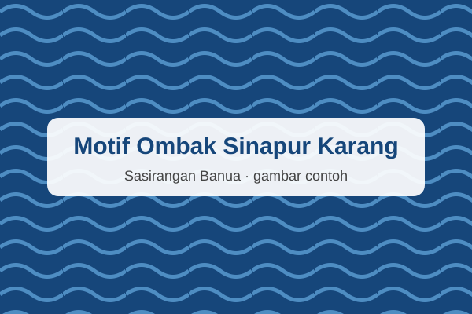

Gigi Haruan
Motif yang terinspirasi dari bentuk gigi ikan haruan.
Rp150.000Warisan Budaya Kalimantan Selatan
Temukan keunikan kain Sasirangan dengan motif khas yang mencerminkan kekayaan budaya dan kreativitas Kalimantan Selatan.
Jelajahi KoleksiKenali beragam motif yang terinspirasi dari alam, kehidupan, dan budaya Banua.
Motif yang terinspirasi dari bentuk gigi ikan haruan.
Rp150.000
Motif bernuansa tumbuhan dengan tampilan yang khas.
Rp175.000
Motif dengan susunan bentuk yang menarik dan harmonis.
Rp160.000
Motif yang menghadirkan karakter kuat dalam kain tradisional.
Rp200.000
Motif dengan inspirasi gerakan ombak dan alam.
Rp185.000
Motif khas yang melengkapi koleksi kain Sasirangan Banua.
Rp190.000Sasirangan Banua merupakan website katalog kain yang memperkenalkan keindahan kain tradisional Sasirangan dari Kalimantan Selatan.
Melalui beragam motif dan pilihan kain, kami ingin ikut mengenalkan warisan budaya Banua kepada lebih banyak orang serta mendorong kecintaan terhadap produk budaya lokal.
Berikut jadwal layanan Sasirangan Banua.
| Hari | Jam Operasional | Keterangan |
|---|---|---|
| Senin–Jumat | 09.00–17.00 WITA | Buka |
| Sabtu | 09.00–15.00 WITA | Buka |
| Minggu | — | Tutup |